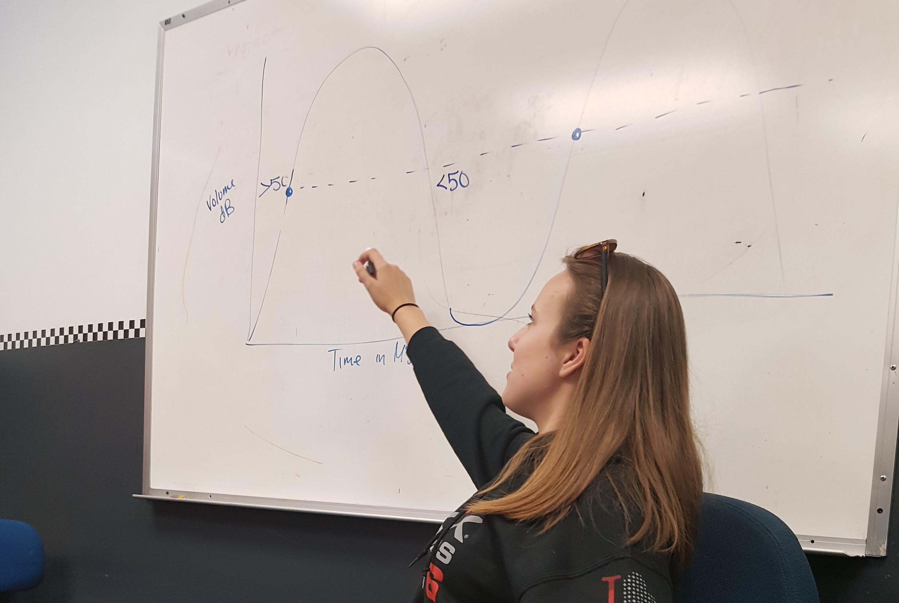

E-BOTS ROBOTICS
Robotics and Programming Teacher
This was my main job during highschool and when I lived and breathed robotics. If I wasn't working on the robot for VEX Robotics, I was teaching students the fundamentals about building and programming robots.
- Taught classes of up to 10 students about simple machines and structural systems and an introduction to basics of programing.
- Gave feedback to students and parents about their child's progress through the classes.
- Trained new teachers and mentored younger competitive robotics teams.
